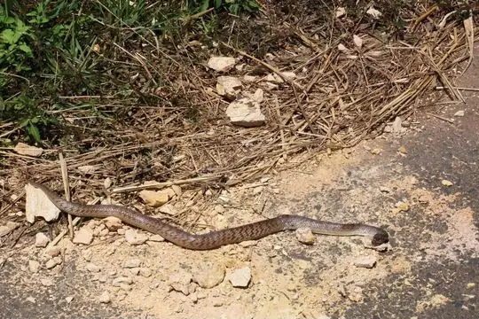
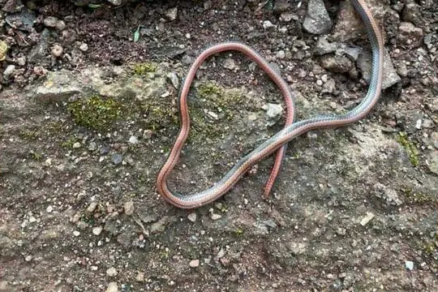

Snakes of Đắk Lắk
A state or province of Vietnam
8 snake species are recorded in Đắk Lắk, a state or province of Vietnam, in SnakeList: 3 venomous and 5 non-venomous, from 4 families.
- 8species
- 3venomous
- 5non-venomous
- 4families
SnakeList records where snakes live by country and by state or province, not by exact spot, so a species listed here may live in only part of Đắk Lắk. All snakes of Vietnam.
Most widely recorded
The species here that have research-grade iNaturalist records in the most places across their whole range - not just in Đắk Lắk. That shows how often people have photographed them, not how many live here.
 Indo-Chinese Rat SnakePtyas korros
Indo-Chinese Rat SnakePtyas korros Common Mock ViperPsammodynastes pulverulentus
Common Mock ViperPsammodynastes pulverulentus Malayan Pit ViperCalloselasma rhodostoma
Malayan Pit ViperCalloselasma rhodostoma King CobraOphiophagus hannah
King CobraOphiophagus hannah Vogel's Pit ViperTrimeresurus vogeli
Vogel's Pit ViperTrimeresurus vogeli Deuve's Kukri SnakeOligodon deuvei
Deuve's Kukri SnakeOligodon deuvei
Langbian KukriOligodon tuani
Nguyenvansang's snakeColubroelaps nguyenvansangi
Snake families
Venomous and non-venomous
Venomous: 3Non-venomous: 5
3 are listed by SnakeList as dangerous to people: King Cobra Ophiophagus hannah, Malayan Pit Viper Calloselasma rhodostoma, Vogel's Pit Viper Trimeresurus vogeli.
Habitats (rough estimate)
How many of its living snakes have each kind of habitat in SnakeList’s estimate. That estimate comes from every country, state and province where each snake is recorded - not from a survey of Đắk Lắk, and not checked species by species.
Who described them
The scientists who first described its most widely recorded snakes, and when.
- Indo-Chinese Rat Snake Ptyas korros -
- Common Mock Viper Psammodynastes pulverulentus -
- Malayan Pit Viper Calloselasma rhodostoma -
- King Cobra Ophiophagus hannah - described by Cantor in 1836 (under another genus name)
- Vogel's Pit Viper Trimeresurus vogeli -
- Deuve's Kukri Snake Oligodon deuvei -
- Langbian Kukri Oligodon tuani -
- Nguyenvansang's snake Colubroelaps nguyenvansangi -
Names and dates come from SnakeList’s reviewed species accounts; the others are looked up on Wikidata (CC0) when this page opens.
Neighbouring states and provinces
Places in SnakeList that share a border with Đắk Lắk.
All 8 species
- Common Mock Viper Psammodynastes pulverulentus
- Deuve's Kukri Snake Oligodon deuvei
- Indo-Chinese Rat Snake Ptyas korros
- King Cobra Ophiophagus hannah venomous
- Langbian Kukri Oligodon tuani
- Malayan Pit Viper Calloselasma rhodostoma venomous
- Nguyenvansang's snake Colubroelaps nguyenvansangi
- Vogel's Pit Viper Trimeresurus vogeli venomous
No snake here matches that.